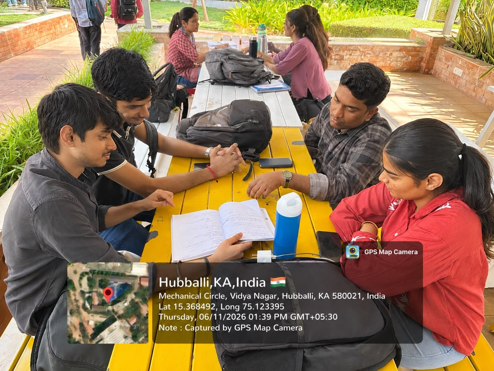

Problem Statement 06Cube Test Failures — Investigation & Prevention
Theme — Demonstrate the importance of site tests and the ramifications of material test failure.
Problem statement
Official theme
To demonstrate the importance of various tests conducted on site and the ramifications of the failure of material tests.
RCC work is in progress and the work has reached the ground floor level in 3 blocks. Concrete cubes cast during the RCC work of all footings and columns are sent out for testing by a third party testing company. Out of 106 footings cast, all 106 have attained the required strength. But out of 56 columns cast, 23 of them have failed the 28-day compressive strength test. Since your own concrete plant is still being set up, you had used local RMC for this work. The RMC owner has a clause on the contract that states that any failure of strength attainment will be his responsibility and he will bear the expenses to demolish the failed structural component and rebuild it. This clause saved a lot of financial loss to your company. But the RMC contractor still says there was a mistake in the concreting at the site.
Brainstorm to figure out all the possibilities that might have gone wrong. Also, develop a plan that will ensure no concrete cube test will fail in this project hereafter. Also, from the RMC owner’s point of view, what precautions should he take to ensure he does not face such precarious conditions in the future.
Official wording from the course brief. The case figures are the faculty's scenario, not Nandish's site records.
Incident summary — facts vs unknowns
Columns
23 of 56 failed the 28-day test brief
23 ÷ 56 × 100 = 41.07%
Footings
106 of 106 passed brief
Supply
Local RMC; own plant not yet running brief
| Item needed for each failed result | Status |
|---|---|
| Member and location | [Data required] |
| Concrete grade specified | [Data required] |
| Pour date, batch / ticket no. | [Data required] |
| Sample / cube IDs, cube age, test date | [Data required] |
| Measured strengths | [Data required] |
| Acceptance criteria applied | [Project specification / IS 456 — confirm] |
Confirmed facts are only those in the brief. The RMC contractor's claim of a site mistake is an allegation until evidence shows otherwise.
Objectives and scope
- Contain the problem and preserve evidence
- Test every plausible cause against evidence
- Separate technical cause, procedural failure and contractual responsibility
- Leave structural decisions to the appointed structural engineer
- Prevent any avoidable cube failure on future pours
- Set out the RMC owner's own precautions
Team meeting — minutes of meeting
Cube test failure — investigation and prevention
| Field | Entry |
|---|---|
| Meeting number | [e.g. Meeting X] |
| Problem statement | Cube test failure — investigation and prevention |
| Date | [To be filled / verified] |
| Time | [To be filled / verified] |
| Mode / location | [To be filled / verified] |
| Members present | [Only confirmed names] |
| Next meeting | [To be confirmed] |
Agenda
- Understand the problem statement and required deliverables.
- Review PS1 project information relevant to this problem.
- Identify missing data and evidence required.
- Discuss the proposed technical approach.
- Allocate responsibilities and deadlines.
- Containment actions
- Evidence register owners
Discussion points (proposed — to be confirmed)
- What is known from the brief and what records are missing
- Why footings passed but columns failed — differences in batch, date, mix, placing, sampling
- RMC clause on demolition and rebuild vs the RMC contractor's claim of site error
- Preventive controls for future pours
Decisions — proposed, not yet taken
- Hold further pours with the suspect mix / batch pending review
- Build the evidence register before assigning cause
- Structural engineer decides on any further testing or remedial action
Action items
| Task | Responsible member | Due date | Status |
|---|---|---|---|
| Trace failed results to members and batch tickets | [Confirmed member] | [Date] | [Open] |
| Collect plant, delivery, site and lab records | [Confirmed member] | [Date] | [Open] |
| Prepare fishbone and provisional 5-Why | [Confirmed member] | [Date] | [Open] |
| Draft CAPA tracker | [Confirmed member] | [Date] | [Open] |
| Review RMC agreement clauses | [Confirmed member] | [Date] | [Open] |

About this photograph
A real team working session from the semester, placed with the PS6 draft minutes. The minutes above remain a draft to be verified against the actual discussion.
Immediate containment and evidence register
- HoldStop further pours using the suspect mix / batch where appropriate.
- PreserveKeep remaining cubes, certificates, batch tickets, challans, pour cards, site diaries.
- TraceMap each failed result to member, batch and pour.
- NotifyProject manager, QA/QC, RMC supplier and structural engineer, in writing.
- No verdictDo not declare any member safe or unsafe — that is the structural engineer's decision.
Evidence register
| Evidence | Held by | What it can show | Status |
|---|---|---|---|
| Cube sampling and curing records | Site / QA/QC | Correct sampling, first-24 h protection, tank curing | [Pending] |
| Lab accreditation, CTM calibration, test procedure | Third-party lab | Test validity | [Pending] |
| Cube dimensions, age, condition, failure mode | Third-party lab | Specimen and test quality | [Pending] |
| Slump / workability and fresh-concrete records | Site | Workability at receipt; possible water addition | [Pending] |
| Plant calibration, weigh-batch printouts, mix design, material certificates | RMC supplier | Correct proportions and materials | [Pending] |
| Water added at plant / site, admixture dosage, transit time | RMC / site | w/c ratio changes, workability loss | [Pending] |
| Placement, compaction, vibration, finishing, curing records | Site | In-situ quality | [Pending] |
| Weather, delays, segregation, bleeding | Site diary | Contributing conditions | [Pending] |
| Supplier and contractor communications | PM office | Notices and claims | [Pending] |
Root-cause analysis (provisional)
Hypotheses to test
| Hypothesis | Evidence that confirms or rejects it |
|---|---|
| Incorrect mix proportions / batching error | Weigh-batch printouts, plant calibration |
| Moisture correction or aggregate grading issue | Plant material records |
| Excess or unauthorised water | Tickets, slump, site observation |
| Admixture dosage / compatibility | Dosage records, trials |
| Delayed delivery / workability loss | Dispatch and arrival times |
| Poor cube sampling, moulding, compaction or curing | Cube register, curing log |
| Laboratory / testing error | Accreditation, calibration, procedure |
| Poor placing, compaction or curing in the structure | Pour records — affects members more than cubes |
| Material quality or equipment calibration | Certificates, calibration records |
5-Why — provisional, to be completed from evidence
| Why? | Answer (evidence-backed only) |
|---|---|
| 1. Why did 23 column results fail? | [Pending evidence] |
| 2. Why …? | [Pending] |
| 3. Why …? | [Pending] |
| 4. Why …? | [Pending] |
| 5. Why …? (root cause) | [Pending] |
Technical evaluation and responsibility
Cubes vs the structure
- Cube results describe the sample's concrete under standard curing, not directly the in-situ member
- Low cubes can come from poor sampling or curing while the member is adequate — or the reverse
- Further testing (rebound hammer, UPV, cores) is selected and interpreted by qualified professionals and the structural engineer
- No single NDT result is proof of structural capacity
- Acceptance criteria: project specification and the applicable code (IS 456) — clause to confirm
Contractual review
- Purchase order / RMC agreement and approved mix design
- Supplier scope and sampling responsibility
- Site handling obligations after discharge
- Acceptance / rejection clauses and notice periods
- Liability clause — demolition and rebuild at the RMC owner's cost (brief)
- Technical cause ≠ procedural failure ≠ contractual responsibility — no blame before evidence
RACI
| Activity | RMC supplier | Site team | QA/QC | Third-party lab | Structural engineer | Project manager |
|---|---|---|---|---|---|---|
| Mix design and batching | R | I | C | C | A | |
| Receipt checks and slump | C | R | A | |||
| Placing, compaction, curing | R | A | ||||
| Cube sampling and curing | C | R | A | |||
| Testing and reporting | C | R | I | I | ||
| Structural assessment and decision | I | I | C | C | R | A |
| Contract claim | C | C | C | C | R |
R responsible · A accountable · C consulted · I informed. Subject to the actual contract.
Corrective and preventive action
CAPA tracker
| # | Type | Action | Owner | Due | Closure evidence | Status |
|---|---|---|---|---|---|---|
| 1 | Containment | Hold suspect mix / batch; preserve records | Project manager | [Date] | Hold notice | [Open] |
| 2 | Correction | Trace failed results to members | QA/QC | [Date] | Traceability sheet | [Open] |
| 3 | Root cause | Complete evidence register, fishbone, 5-Why | QA/QC | [Date] | Investigation report | [Open] |
| 4 | Supplier CAR | Corrective action request to RMC supplier | Project manager | [Date] | Supplier reply and evidence | [Open] |
| 5 | Preventive | Pour checklist, cube register, hold points for all pours | Site engineer | [Date] | Signed checklists | [Open] |
| 6 | Structural | Engineer's assessment and decision | Structural engineer | [Date] | Assessment report | [Open] |
No avoidable cube failure hereafter — site plan
- Approved mix design and trial results before first pour
- Pour card: formwork, reinforcement, cover checked
- Receipt: batch ticket, time since batching, slump; no water without approval
- Placing: drop height, layer thickness, vibration
- Cubes: correct sampling, IDs, first-24 h protection, tank curing
- Accredited lab; results reviewed at 7 and 28 days; NCR when needed
RMC owner's precautions
- Calibrated plant; daily weigh-batch records
- Material testing and moisture correction
- Batch tickets with grade, time and quantity
- Transit-time limit; no water added in transit
- Joint sampling with site; witness cube casting
- Clear contract clauses on site handling, sampling and curing responsibility
- Insurance for product liability where available — to confirm
- Keep records for the contract period
All decisions on acceptance, repair, strengthening, load restriction or demolition are made by the appointed structural engineer on documented assessment. This page prescribes none.
Risk assessment and mitigation
| Risk | Likelihood / impact | Mitigation |
|---|---|---|
| Further pours with the same problem | [Assess] | Hold and preventive controls |
| Missing records | [Assess] | Preserve immediately; request from supplier |
| Dispute over responsibility | [Assess] | Evidence register; contract review |
| Programme delay | [Assess] | Re-sequence other blocks |
| Unsafe use of members | [Assess] | Load restriction only on engineer's advice |
Limitations
- Only the brief's figures are known; member-level data is missing.
- All causes are hypotheses.
- No structural conclusion is drawn.
Key findings and learning outcomes
- Footings passing is a useful comparison group for finding what differed in the columns.
- A liability clause protects cost, not programme or safety — prevention still matters.
- Cube results start an investigation; they do not end it.
Conclusion
References, standards and official sources
- Course brief — Construction Workshop, Problem Statement 6
- IS 456 — Plain and reinforced concrete (acceptance criteria clause to confirm)
- IS 516 — Methods of tests for strength of concrete
- IS 1199 — Methods of sampling and analysis of concrete
- IS 4926 — Ready-mixed concrete, code of practice
- IS 13311 — Non-destructive testing of concrete
Editions and clause numbers are to be confirmed against the project specification before submission.